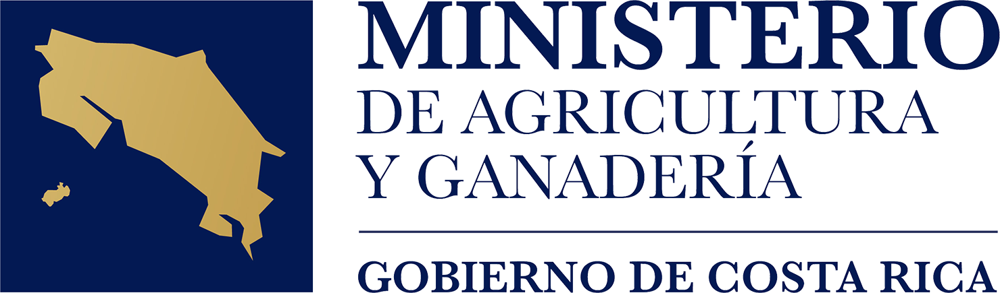

| BID | IICA
¡Conectando a la región para transformar la agricultura!
22-23 de Septiembre de 2026 | San José, Costa Rica
El evento inicia en:
1. El Futuro de los Bioinsumos
Tendencias globales, dinamismo del mercado, geopolítica, demanda y políticas públicas que están transformando la agricultura regional.
2. Cómo Generar Confianza
Calidad de insumos, validación y evidencia científica, servicios de laboratorio, producción on-farm vs. industrial y marcos regulatorios.
3. Innovación Biológica
Modelos de transferencia tecnológica, startups, spin-offs, propiedad intelectual e inversión estratégica entre ciencia e industria.
4. Ventaja Competitiva
Productividad, acceso a mercados internacionales, límites máximos de residuos (LMR), normativas como EUDR y resiliencia agrícola.

Cronograma General de la Semana
Por primera vez, Costa Rica será sede de este gran encuentro del 21 al 25 de septiembre de 2026.
Mesas de Trabajo y Talleres
Actualización, colaboración y construcción coordinada de agendas comunes para el sector.
4.º Foro Panamericano de Bioinsumos
Conferencias magistrales con referentes internacionales, paneles estratégicos y diálogos de política.
Gira Técnica de Campo
Visitas a experiencias destacadas en el desarrollo y uso práctico de bioinsumos en fincas de Costa Rica.
Sesión con Tomadores de Decisiones
Encuentros clave entre programas y proyectos para alinear acciones y sinergias regionales.
Nuestra Trayectoria
El Foro Panamericano es un esfuerzo sostenido a través de los años para la consolidación agroecológica.
El Inicio del Diálogo Regional
Establecimiento de las primeras mesas técnicas y articulación de necesidades prioritarias por país.
Marcos Regulatorios e Intercambio
Enfoque en la armonización de normativas biológicas y registros sanitarios transfronterizos.
Evidencia y Adopción Comercial
Impulso a la validación en laboratorios y al financiamiento de biofábricas comunitarias.
Apoyo Institucional y Organizadores
Pre-registro al Foro
Asegura tu participación en las conferencias y paneles virtuales/presenciales.
Información del Evento y Sede
Las actividades principales de la Bioinputs Americas Week 2026 se llevarán a cabo de forma híbrida desde San José, Costa Rica.